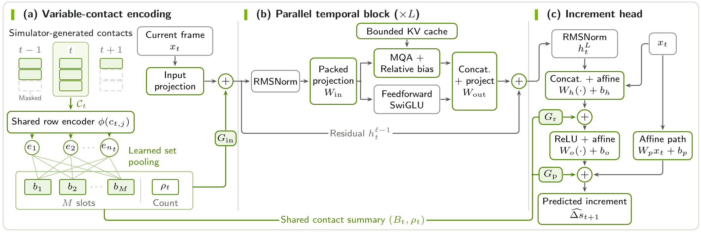
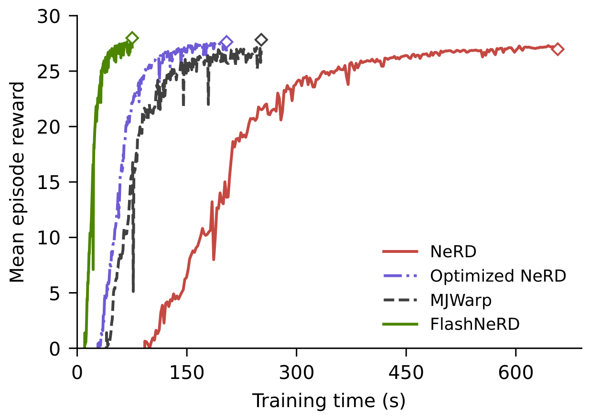
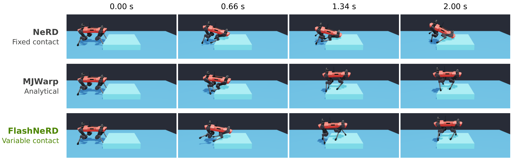
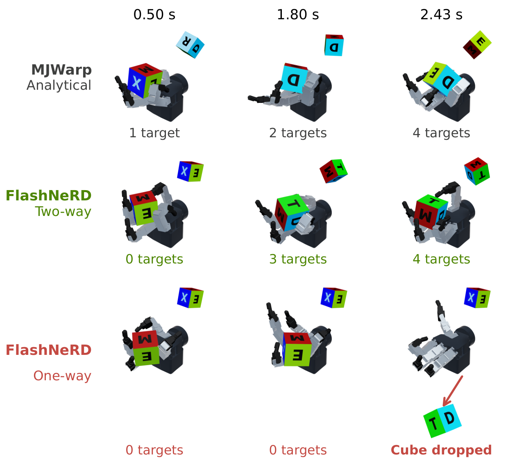
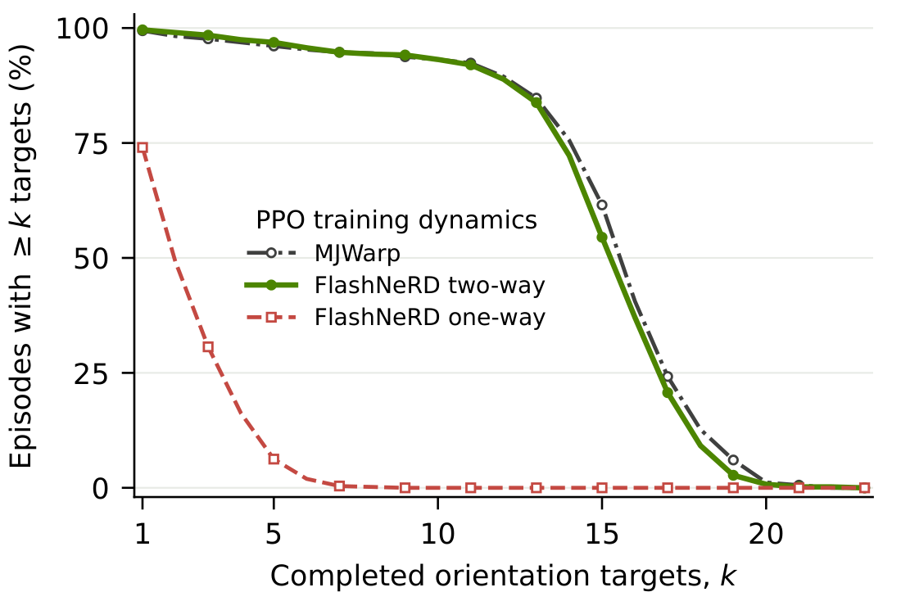

FlashNeRD: Performance-First Contact-Rich Neural Robot Dynamics
Abstract
FlashNeRD extends Neural Robot Dynamics (NeRD) for fast, contact-rich robot learning and control. Its architecture combines parallel attention and feedforward processing, direct state paths, and streaming key–value caching with a fixed temporal receptive field. A variable-contact encoder consumes contacts generated by collision detection, while bidirectional coupling combines learned robot motion with analytically simulated objects and returns contact reactions to the robot. Experiments evaluate model throughput and prediction accuracy on CartPole, Franka, and G1, fixed-contact locomotion learning, platform climbing with DIAL-MPC, and Allegro cube reorientation. FlashNeRD accelerates learned transitions and policy training, completes all six tested climbing terrains, and supports sustained manipulation through two-way coupling. All reported application evaluations use MuJoCo Warp within Newton.
Method
FlashNeRD learns a robot’s state change over one simulation step from a short history of states, controls, gravity, and contact information. States and predictions are expressed in the robot’s base frame. Collision detection remains analytical; the network learns the robot’s response. The architecture below shows the variable-contact model.

(a) Variable-contact encoding
At each predicted state, the collision detector supplies the current contacts. Each contact row describes the participating bodies, local geometry, and relative surface velocity. A shared row encoder and learned weighted pooling compress this unordered set into a fixed number of summary slots. A normalized contact count preserves multiplicity that averaging would lose; an empty set produces a zero summary. Gated maps inject the summary into the input embedding, hidden readout, and final increment. This accepts contacts wherever they occur on the robot, without predefined probe locations.
(b) Parallel temporal blocks
Each block applies multi-query attention and a SwiGLU feedforward branch to the same normalized hidden state. Attention captures history-dependent effects, while the feedforward branch transforms the current frame. One packed input projection supplies both branches, and one output projection merges their results before the residual addition. This reduces sequential operations per step. Multi-query attention shares one key/value head across query heads to limit cache traffic, and a learned relative bias encodes each past frame’s lag.
(c) Increment prediction
The readout combines the final temporal features with the current state, control, and gravity input. A nonlinear head supplies state-dependent corrections, while a direct affine path captures approximately linear local dynamics. Current contacts also act directly on the readout and output. The predicted increment updates the robot state, with orientation increments composed as rotations. Keeping current inputs explicit prevents their information from being diluted by the history representation.
Bounded streaming inference
During a rollout, only the newest frame is projected. Each block reuses a fixed-size circular cache of past keys and values, overwriting the oldest pair at each step. Attention spans and relative biases match training, so streaming and full-window predictions agree to floating-point roundoff for the same valid history. The total receptive field spans multiple blocks: two blocks that each attend to three frames see five raw input frames. Cache size and per-step attention work remain constant as the rollout grows; each simulated environment maintains its own history.
Two-way coupling
Coupled manipulation uses a separately trained model of a fixed-base robot’s free motion. It predicts a velocity increment under applied motor torques, before contact and joint constraints. MuJoCo Warp within Newton combines this prediction with the objects’ analytical dynamics, solves contacts and joint constraints jointly, and integrates both states. The resolved robot state feeds the next prediction, allowing object reactions to change its motion. Contact effects enter through this shared solve, so they are excluded from the free-motion model’s training targets.
Selected results
The experiments cover locomotion learning, contact-rich planning, and coupled manipulation. Select any figure to view it at full resolution.
Locomotion learning with fixed contact
ANYmal-C velocity tracking uses the same four fixed foot probes for every learned model. With 16,384 environments on one GB200, FlashNeRD completes the 300-iteration PPO training loop in 79.1 s, compared with 255.9 s for MuJoCo Warp (MJWarp). The final policies achieve similar rewards in the common analytical evaluator. Each method uses one policy-training seed; timings exclude data collection, dynamics-model training, and process initialization.

Variable contact for contact-rich planning
Across six tested terrains, variable-contact FlashNeRD and MJWarp planning complete all six climbs, while fixed-contact NeRD completes one. This evaluates the architecture and contact representation together. Planning runs slower than real time.

Coupled manipulation
Allegro-hand cube reorientation tests whether contact reactions reach the learned hand during policy training. One-way and two-way coupling use the same frozen hand model. In the illustrated rollouts, policies trained with two-way FlashNeRD coupling and MJWarp complete four orientation targets by 2.43 s; the one-way policy drops the cube at 2.47 s without completing a target.

Across 512 evaluation episodes per policy, policies trained with two-way FlashNeRD coupling complete a mean of 14.26 orientation targets per episode, compared with 14.49 for MJWarp training and 1.79 for one-way coupling. Each method uses one policy-training seed. The plot below shows how this difference extends beyond the illustrated rollout.
